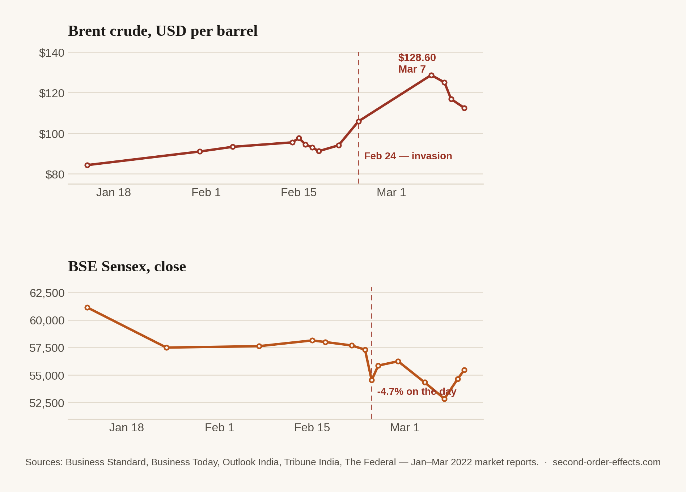

The Barrel and the Pump: How a War in Europe Shaped a Fuel Bill Thousands of Miles Away
India buys less than 2% of its crude oil from Russia. That didn't stop a war three thousand kilometres away from wiping ₹13 lakh crore off Indian markets in a single session.
$117.39. Write that number on a slip of paper and hand it to someone with no context and it means nothing. Tell them it's the price of a barrel of the crude oil India imports, on March 3, 2022, and it still doesn't mean much, until you tell them it was 44% higher than the price Indian fuel retailers had been quietly pricing off since November. Then it starts to look like what it actually was: the moment a war that started nine days earlier and three thousand kilometres away arrived at a fuel pump in Mumbai.
Here's the part that stopped me when I first looked into it. India barely buys any oil from Russia. At the time of the invasion, Russian crude was under 2% of India's import basket, which is roughly $1 billion out of an $82 billion annual oil bill. By any reasonable accounting, a war involving Russia shouldn't have moved India's fuel prices much at all.
It moved them anyway, because oil isn't sold door to door. It trades in one global pool, and Russia is one of the top three suppliers into that pool. The instant a top-three supplier turns into a sanctions risk, the price of every barrel on the planet reprices. That includes the barrels India was already buying from Saudi Arabia, Iraq, and the UAE, none of which had anything to do with Ukraine. India didn't need to touch a drop of Russian oil to end up paying the Russian-oil-shortage price for oil it was buying from someone else entirely.
The freeze, and the bill that was always coming
For nearly four months, Indian petrol and diesel prices at the pump hadn't moved. The government had frozen them in early November 2021, and the freeze held clean through a run of state elections, even as the crude India actually pays for kept climbing underneath it. By early March, government arithmetic put the honest number at a hike of roughly ₹12.1 a litre just to break even on the crude already in the pipeline, getting closer to ₹15.1 once you added retailer margins back in. The freeze was never making the cost disappear. It was just deciding, quietly, who would eventually pay it, and when the bill would come due.
The Finance Ministry has its own rule of thumb for how far this travels: every $10 added to a barrel of crude is worth roughly 0.3 percentage points off GDP growth, 1.7 points onto inflation, and half a point wider on the current account deficit. The Ukraine war moved crude by three to four times that $10 benchmark in a matter of days. None of that is an abstraction if you're the one standing at the pump deciding whether the scooter or the car gets used this week.
The market didn't wait for the pump
Fuel prices move in weeks. Markets move in minutes. On the day of the invasion, the Sensex fell 2,702 points (4.7%) to close at 54,530, and the Nifty dropped 815 points to 16,248. One session, ₹13 lakh crore gone. Over the following week the Sensex slid another 6.2% as foreign investors turned net sellers. Estimates showed ₹6,645 crore of selling in a single session at one point and the rupee weakened right alongside the sell-off. Brent crude, the global benchmark, pushed past $105. Gold hit a 17-month high, which is what happens when money looks for somewhere to stand still.

The war's first-order effect was on Ukraine. Its second-order effect was a number on a commodities screen. By the third or fourth order, it was a household deciding whether the scooter or the car goes to work this week.
Where I was watching from
In February 2022 I was still a first-year student at NTU, reading Business Analytics and Computer Science, and the war registered the way it did for most people my age, a headline, then a chart in a finance module, then background noise. It stopped being background a year later, when I started helping run operations and finance for my family's agricultural commodities business: procurement, exports, shipment planning, the full chain. Fuel and freight stopped being a line in a textbook and became a number I had to price around. The 2022 shock itself had passed by the time I was the one watching input costs. But the mechanism it taught me never left: a war on one continent becomes a margin problem on another within weeks, and I've re-learned that lesson more times since than I'd like.
That's really the pattern this whole site is built around. An event with an obvious first casualty almost always has a second, quieter one, several steps removed, that never makes the headline but shows up in someone's monthly budget anyway. This was simply the clearest version of it I'd lived through myself.
Sources
- India TV News — break-even fuel price hike calculations, March 2022
- Down To Earth — ripple effects of the war on India's fuel prices
- Business Today — Sensex/Nifty crash on the day of the invasion
- Business Standard — market reaction and FII outflow data
- Chart data compiled from Business Standard, Business Today, Outlook India, Tribune India, and The Federal market reports, January–March 2022.
Comments